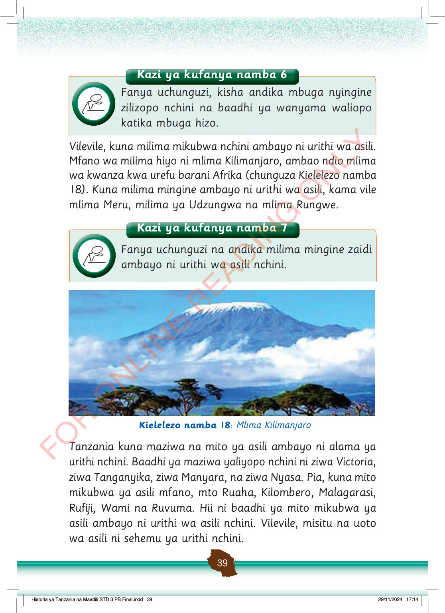

Kazi ya kufanya namba 6
Fanya uchunguzi, kisha andika mbuga nyingine zilizopo nchini na baadhi ya wanyama waliopo katika mbuga hizo.
Vilevile, kuna milima mikubwa nchini ambayo ni urithi wa asili.
Mfano wa milima hiyo ni mlima Kilimanjaro, ambao ndio mlima wa kwanza kwa urefu barani Afrika (chunguza Kielelezo namba 18).
Kuna milima mingine ambayo ni urithi wa asili, kama vile mlima Meru, milima ya Udzungwa na mlima Rungwe.
Kazi ya kufanya namba 7
Fanya uchunguzi na andika milima mingine zaidi ambayo ni urithi wa asili nchini.
Mlima Kilimanjaro ukiwa na kilele chenye theluji, mawingu, na miti mbele yake.
Kielelezo namba 18: Mlima Kilimanjaro
Tanzania kuna maziwa na mito ya asili ambayo ni alama ya urithi nchini.
Baadhi ya maziwa yaliyopo nchini ni ziwa Victoria, ziwa Tanganyika, ziwa Manyara, na ziwa Nyasa.
Pia, kuna mito mikubwa ya asili mfano, mto Ruaha, Kilombero, Malagarasi, Rufiji, Wami na Ruvuma.
Hii ni baadhi ya mito mikubwa ya asili ambayo ni urithi wa asili nchini.
Vilevile, misitu na uoto wa asili ni sehemu ya urithi nchini.
Historia ya Tanzania na Maadili STD 3 PB Final.indd 39
29/11/2024 17:14